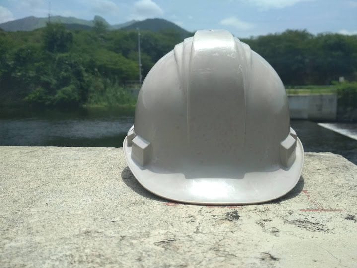
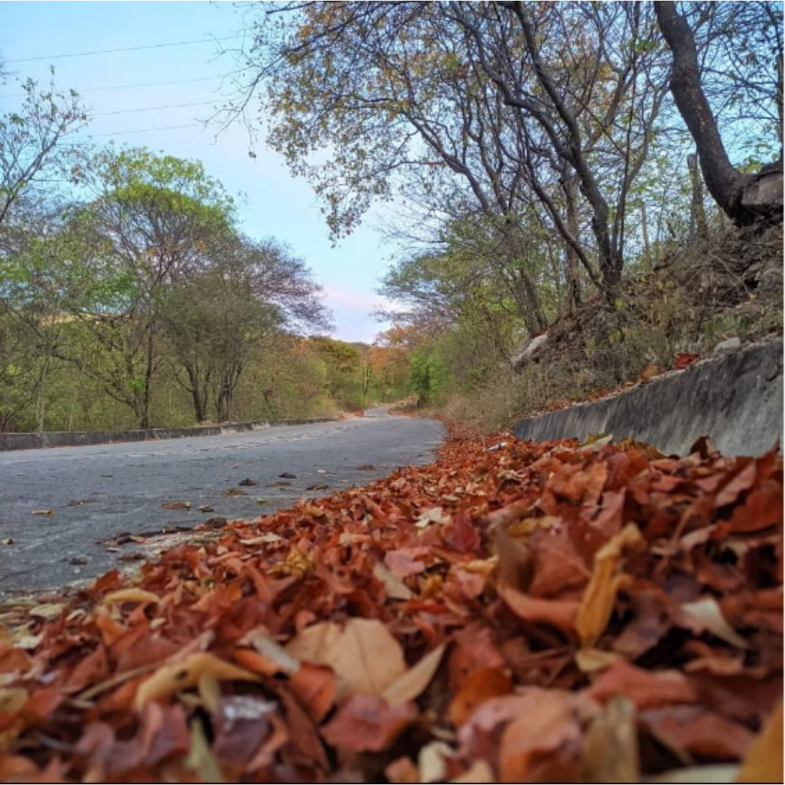
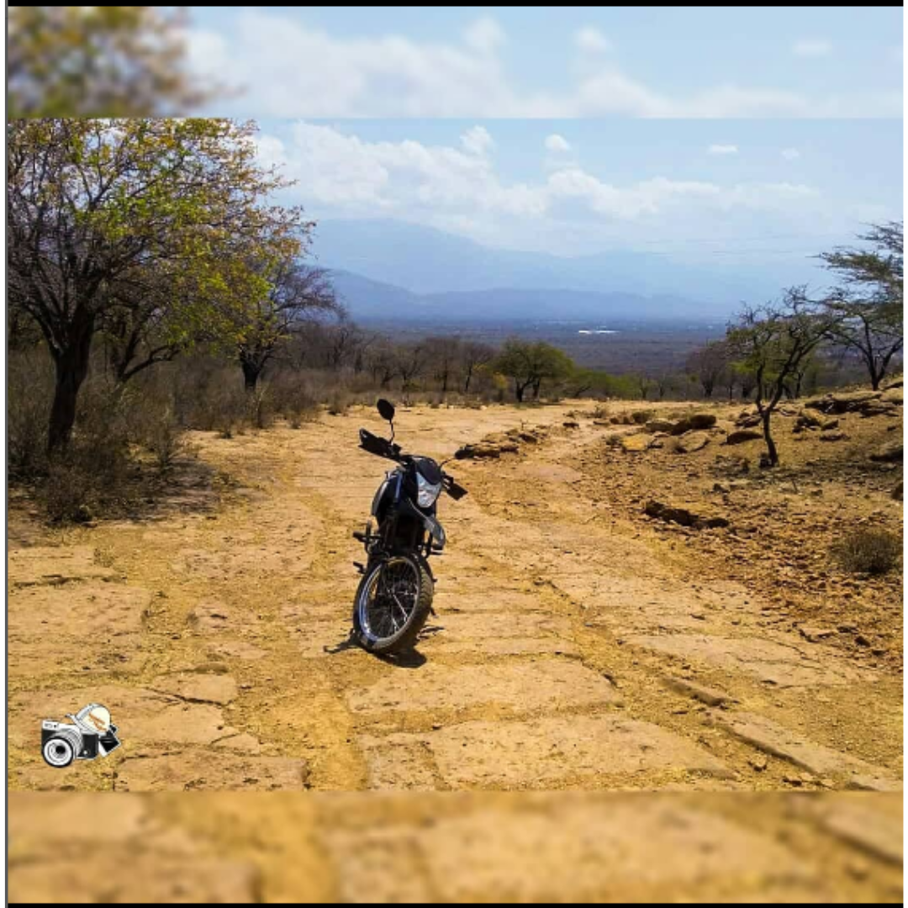
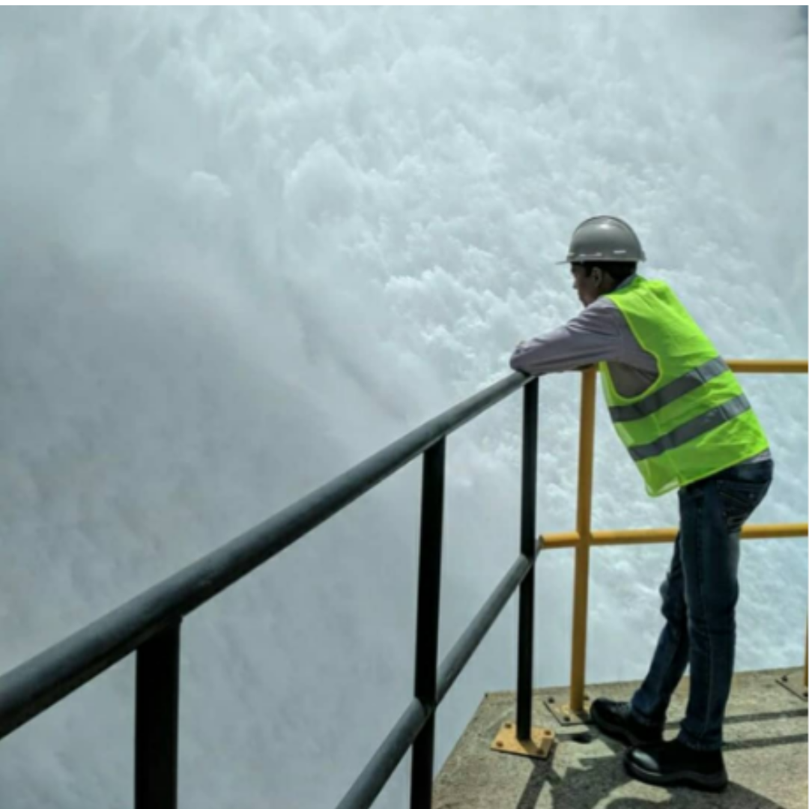
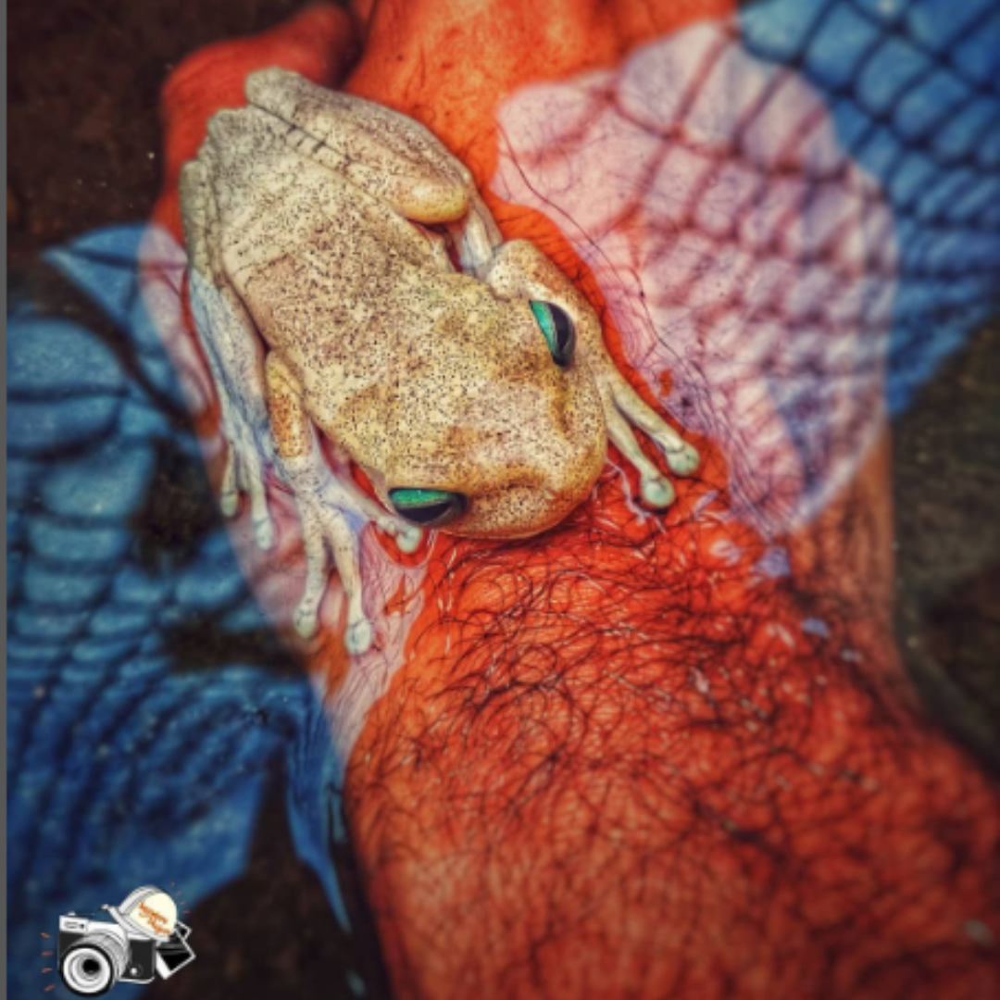

Soy el ingeniero viajero, soy un ingeniero ambiental que le gusta estar rodeado de la naturaleza y que ama tomar fotografia del paisaje que lo rodea sea natural o urbano, después de todo hay belleza en donde menos lo esperas.
Ingeniero viajero es un proyecto dedicado a compartir los espacios visitados y disfrutados por mi y por aquella persona que quiera compartir un bello paisaje con una historia o simplemente dar a conocer la grandiosa fotografia que ha capturado en un rincón del mundo.

fotos
Mira más, Viaja más.
 El color del viaje siempre va a depender del lente que has usado, si ves tú viaje con tristeza solo verás colores tristes y muertos, si ves tú viaje con alegría los colores transmitirán magia y alegría.
Autor de la fotografía: Elisaul Garcia Rosado
Dispositivo móvil usado para capturar la fotografía: Poco X3 NFC
Edición: No
Lugar: zona rural de Hatonuevo, La Guajira - Colombia.

Conquistando la montaña
Autor: Elisaul Garcia Rosado
Hoy cansado y agitado me siento
El día a día del perseverante es duro
No se puede detener ni un momento
Porque pararse es caer seguro
El camino es cruel y árido
Donde no crece la esperanza
Parece imposible estar animado
Y podemos perder la esperanza
Camino en una ruta empinada
A veces creo que no habrá mañana
Porque al anochecer mi alma está cansada
Con todas mis fuerzas voy conquistando la montaña
Quizás no hoy quizás no mañana
Seguiré avanzando no voy retroceder
seguro si lo intentó lograré mi hazaña
Seré yo quien pueda todo vencer
Miraré desde la cima de la montaña
El gran camino recorrido
Mírare con alegría mi mañana
De ver que todo lo he conseguido
En ese instante sabré que todo valió las penas
Que aunque el alma me duela
El triunfo recorrerá mis venas
Y mi corazón hacia el cielo vuela
Fotógrafo: Herwin Guerra @herwinguerra
Dispositivo móvil usado para capturar la fotografía: samsung j2 pro.
Edición: No
Lugar: La Guajira, Colombia
 A veces todo es relativo.
Y todo fluye hacia la nada pero aún así buscamos la esperanza, porque de ahí podemos iniciar nuestro peregrinaje hacia el futuro y no importa lo cansado que estemos, lo que importa es completar el viaje y al final ver los caminos que recorrimos y suspirar al ver los abismos a los cuales casi fuimos empujados. Como humanos buscamos respuestas y no conocemos las preguntas que ansiamos responder; o quizás tenemos las preguntas, y buscamos toda la vida esas respuestas.
Vivir es complicado tal vez solo somos un montón de confusión metidos en un envase de carne, donde las las palabras no son mas que alardes de respirar.
Autor: Elisaul García Rosado
Dispositivo móvil usado para capturar la fotografía: Xiaomi Redmi 4x
Edición: No
Lugar: Represa El cercado, Zona Rural de Distracción, La Guajira - Colombia.

Dicen que estoy loco
El Quijote de la rosa
Abuelo, ¿por qué dicen que estas loco?
Hay mi niña, porque los cuerdos llaman al soñar locura y al saber tormento.
Loco soy de amor de sueños y de cielos descubiertos.
Loco porque construyo barcos de papel para navegar en mar abierto
Porque alzo cometas al cielo que vuelan contra el viento.
Loco soy por llevarte a ti mi niña con mis versos a visitar cielos y soles aun no has descubiertos.
Soy un loco que sueña con que tu sonrisa y mis manos construyan maravillosos universos, donde escaparnos de la maldita cordura de un mundo sin sentimiento.
Si, mi niña el mundo de los seres cuerdos, llama locura a todo lo que escapa de las paredes de su escaso entendimiento.
Autor: Elisaul Garcia Rosado
Dispositivo móvil utilizado para capturar la fotografía: Xiaomi Redmi 4x
Edición: sí.
Aplicación: Snapseed.
Lugar: Corpoguajira territorial sur, Fonseca, La Guajira.